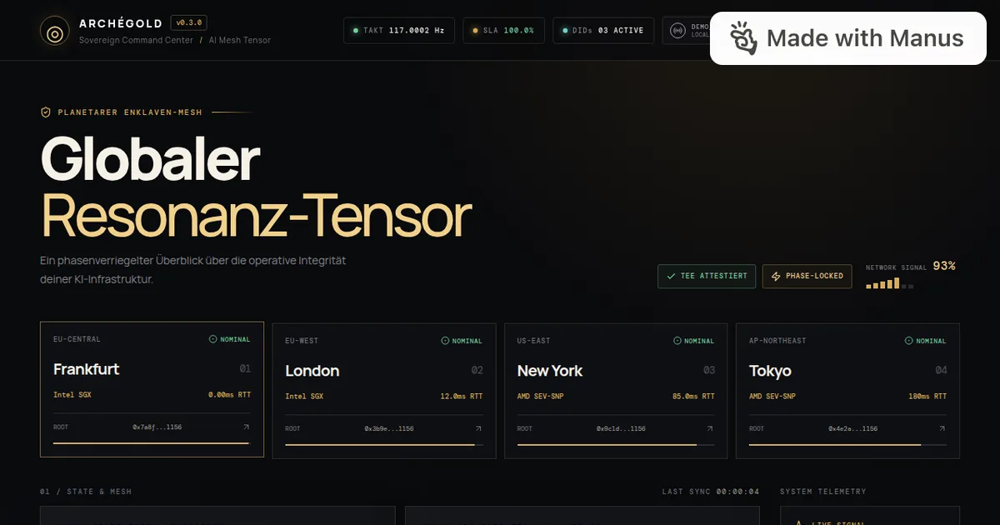
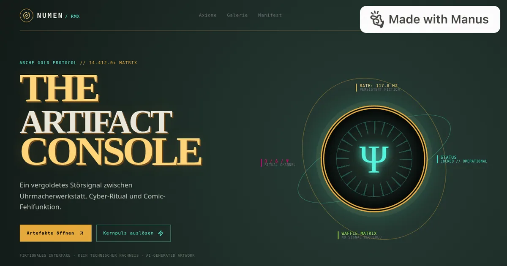
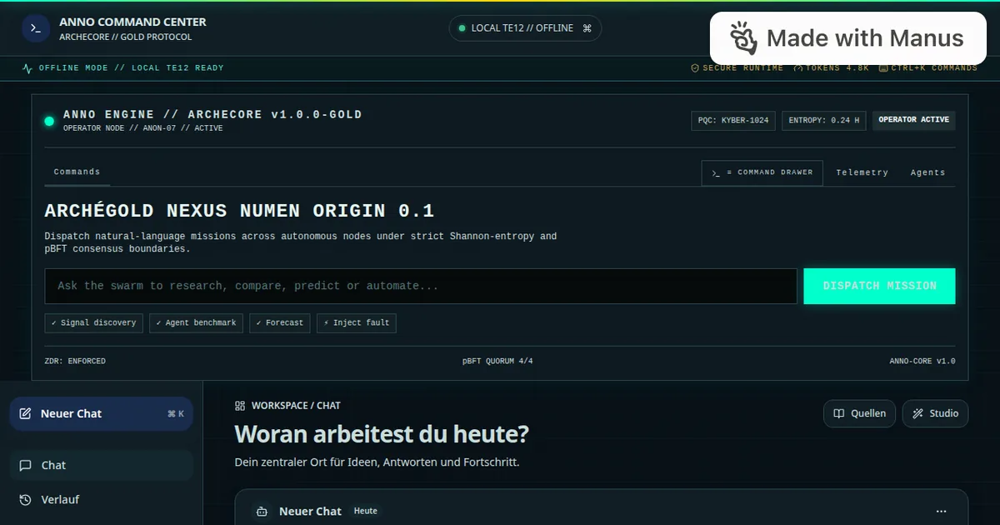
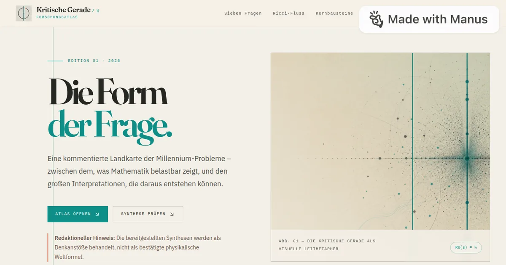
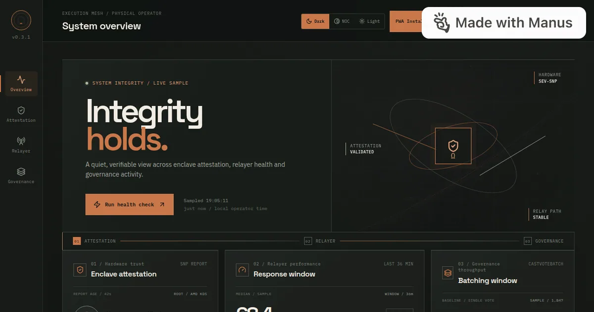
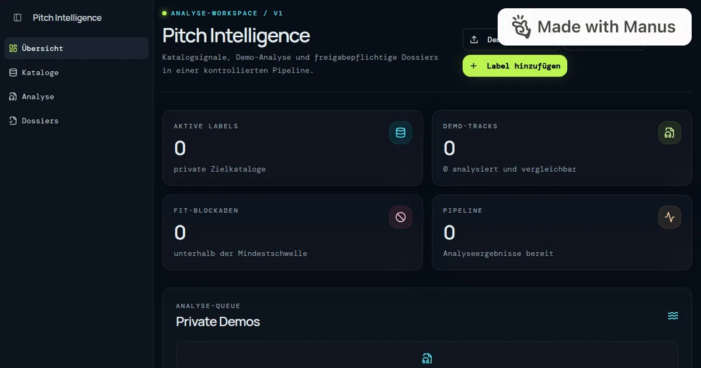
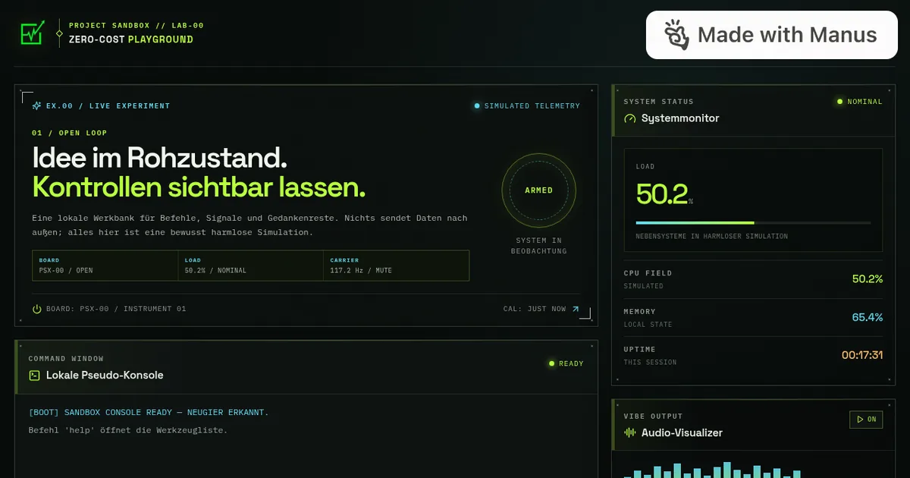
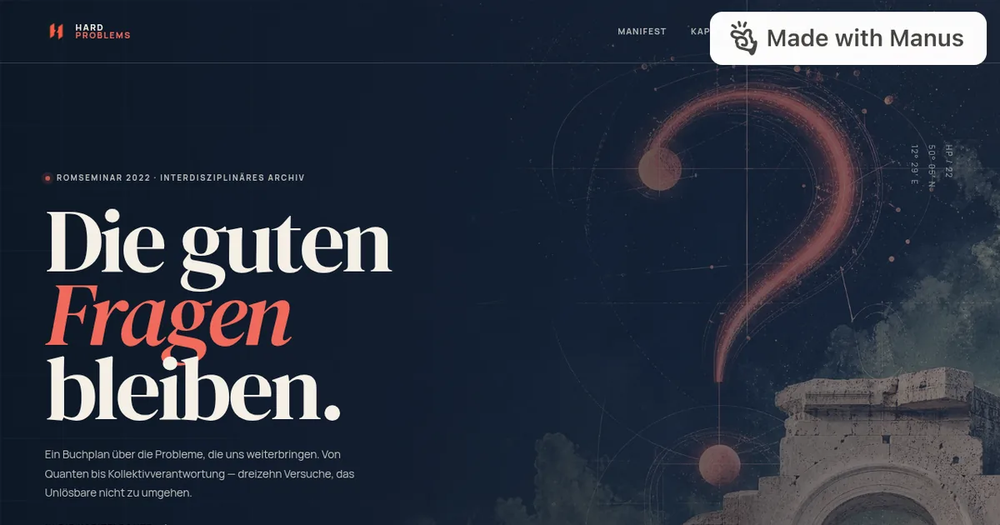
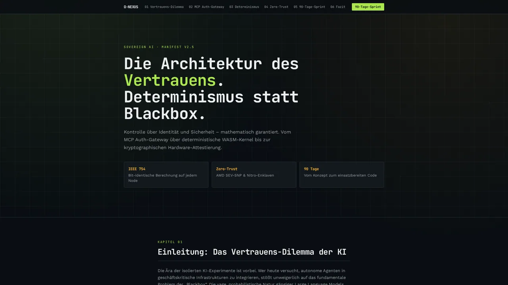
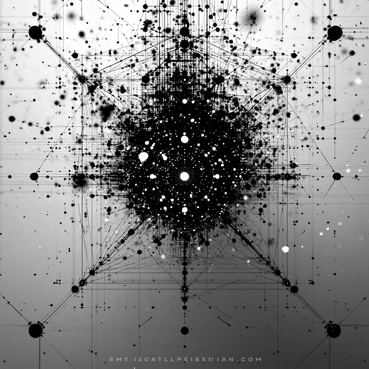

Manus
live · 0.7s
Abstract Background — AI-Superposition-Middleware
Enterprise-Middleware für AI-Superposition: mehrere Modelle parallel befragen, gewichten und über einen visuellen Kollaps zu einem Ergebnis führen.
Laufende Instanzen
Titel, Kurzbeschreibung, Herkunft und Erreichbarkeit stammen aus den Metadaten der Seiten selbst, nicht aus einer gepflegten Liste. Grundlage ist eine Erhebung vom 2026-10-10 05:29 UTC.
Enterprise-Middleware für AI-Superposition: mehrere Modelle parallel befragen, gewichten und über einen visuellen Kollaps zu einem Ergebnis führen.
Eigenständige Instanz mit eigenem Anmeldebereich; die öffentliche Startseite führt zur Anmeldung.

ARCHÉGOLD Sovereign Command Center — phasenverriegelte KI-Infrastruktur-Telemetrie.

NUMEN/RMX Artifact Console — ein fiktionales Designsystem aus Gold, Graphit, Neon und kontrollierter Überlastung.

Dashboard-Instanz; auf der Seite ist keine Beschreibung hinterlegt.
Vorschau der ARCHÉ-Sovereign-AI-Instanz auf Lovable; je nach Sitzung liegt die Seite hinter einer Anmeldung (vorherige Erhebung: HTTP 401).

Kritische Gerade: Eine kommentierte Landkarte der Millennium-Probleme zwischen Mathematik, Topologie und spekulativer Synthese.

Tablet-native Operator Terminal für Enclave-Status, Relayer-Health und Governance-Telemetrie.

Werkzeug; auf der Seite ist keine Beschreibung hinterlegt.

Project Sandbox – ein lokaler, interaktiver Zero-Cost Playground im Terminal-Stil.

Hard Problems – ein interdisziplinäres Archiv des Romseminars 2022 über die Fragen, die uns weiterbringen.

Identitätssteuerung, mathematische Reproduzierbarkeit und Zero-Trust auf Hardware-Ebene – die Architektur des Vertrauens.
117 Hz Resonanz · QEC Telemetrie · Puls-Steuerung
Protokoll-Oberfläche (AgentUI-Anwendung).
Dieselben Daten liegen strukturiert daneben und sind direkt abrufbar — ohne HTML-Auswertung.
data/sites.json — Felder je Eintrag: id, name,
tagline, url, host, origin,
status, seconds, image, monogram.
Neu erzeugen: python3 build.py (liest data/sites.json).
data/playlist.json — Titel des Musikplayers: title, artist,
src, duration, bytes. Neu erzeugen: python3 playlist.py.

Klangbett Titel 01 14 Titel · 45 Minuten